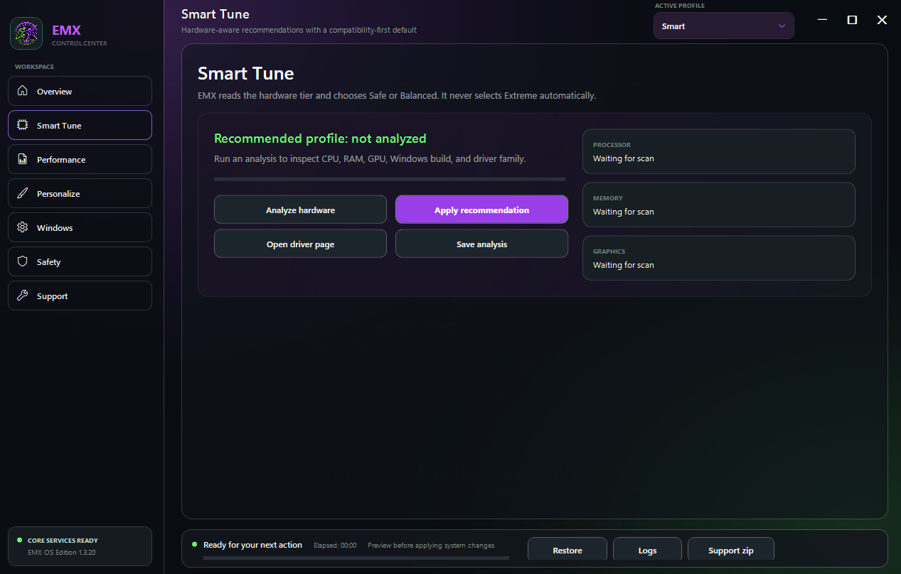
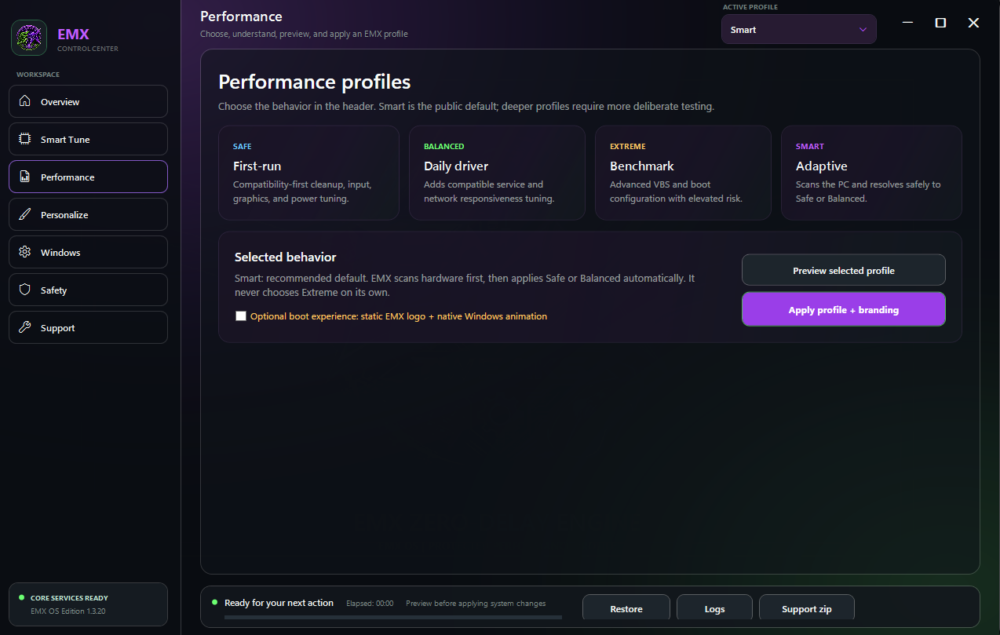
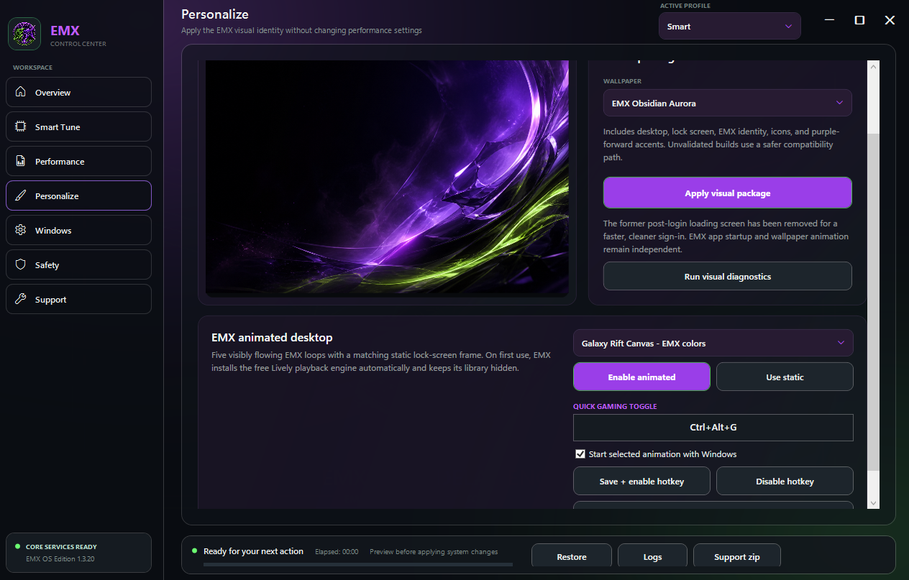
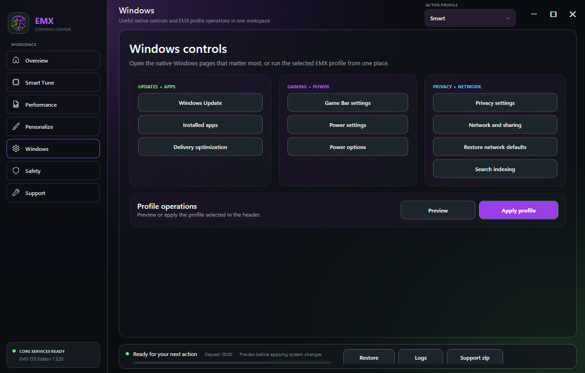
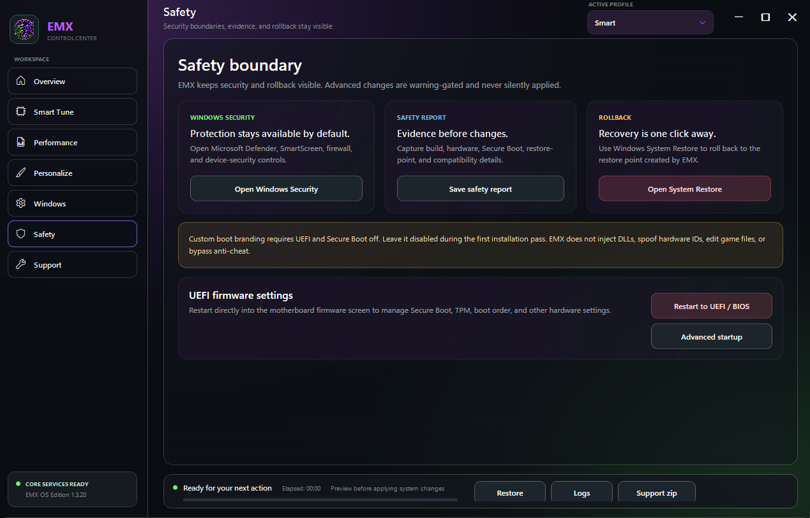
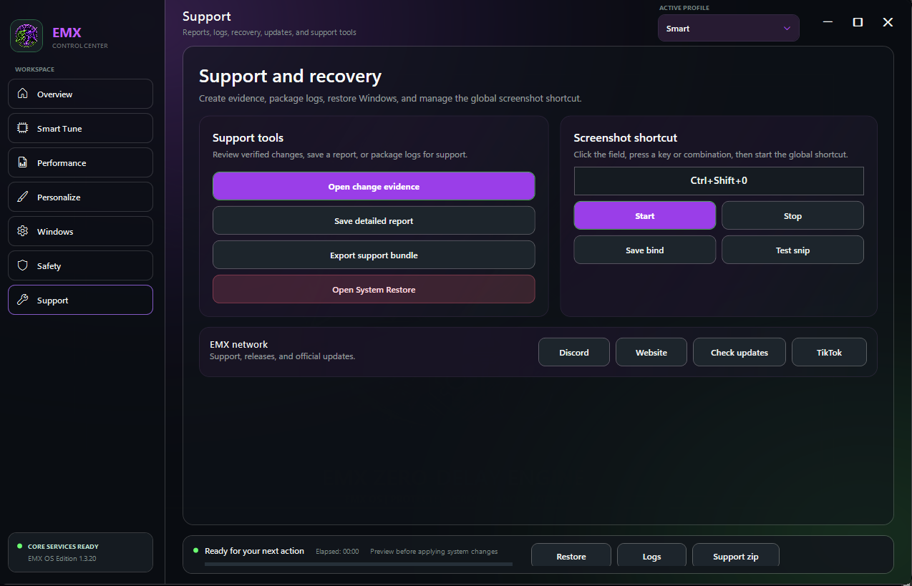
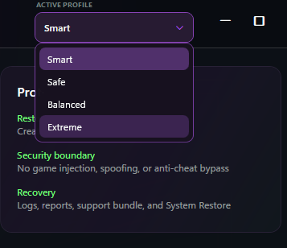

Smart profiles
Hardware-aware setup chooses a supported Safe or Balanced direction instead of claiming every PC should receive the same changes.
WINDOWS 10 + 11 • v1.3.20
EMX Custom OS combines hardware-aware profiles, gaming and creator setup controls, five EMX visual scenes, change evidence, support bundles, restore tools, and in-app updates.

Hardware-aware setup chooses a supported Safe or Balanced direction instead of claiming every PC should receive the same changes.
Before-and-after evidence, logs, and support bundles make the applied configuration easier to review.
Backups and rollback are part of the product requirement. A Windows optimization is incomplete without recovery.
REAL PRODUCT VIEWS
Current product imagery for every workspace: Overview, Smart Tune, Performance, Personalize, Windows, Safety, and Support.







Hardware, Windows state, thermals, drivers, game settings, and network conditions all affect results. EMX does not promise a specific FPS or ping improvement.
Read safety FAQ